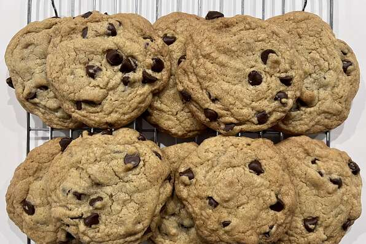

Chocolate Chip Cookies
By deleteduser

Crisp edges, chewy middles.
Nutrition facts:
Per serving:298 calories; protein 3.6g; carbohydrates 38.9g;fat 15.6g;
cholesterol 35.8mg; sodium 165.8mg.
Full Nutrition
Ingredients
- 1 cup butter, softened
- 1 cup white sugar
- 1 cup packed brown sugar
- 2 eggs
- 2 teaspoons vanilla extract
- 1 teaspoon baking soda
- 2 teaspoons hot water
- 1/2 teaspoon salt
- 3 cups all-purpose flour
- 2 cups semisweet chocolate chips
- 1 cup chopped walnuts
Directions
- Step 1
Preheat oven to 350 degrees F (175 degrees C).
- Step 2
Cream together the butter, white sugar, and brown sugar until smooth.
Beat in the eggs one at a time, then stir in the vanilla. Dissolve baking soda
in hot water. Add to batter along with salt. Stir in flour, chocolate chips,
and nuts. Drop by large spoonfuls onto ungreased pans.
- Step 3
Bake for about 10 minutes in the preheated oven, or until edges are nicely browned.
Home:
Odin Recipes